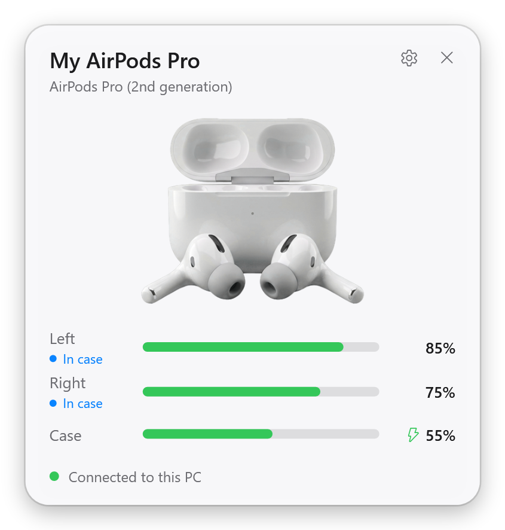
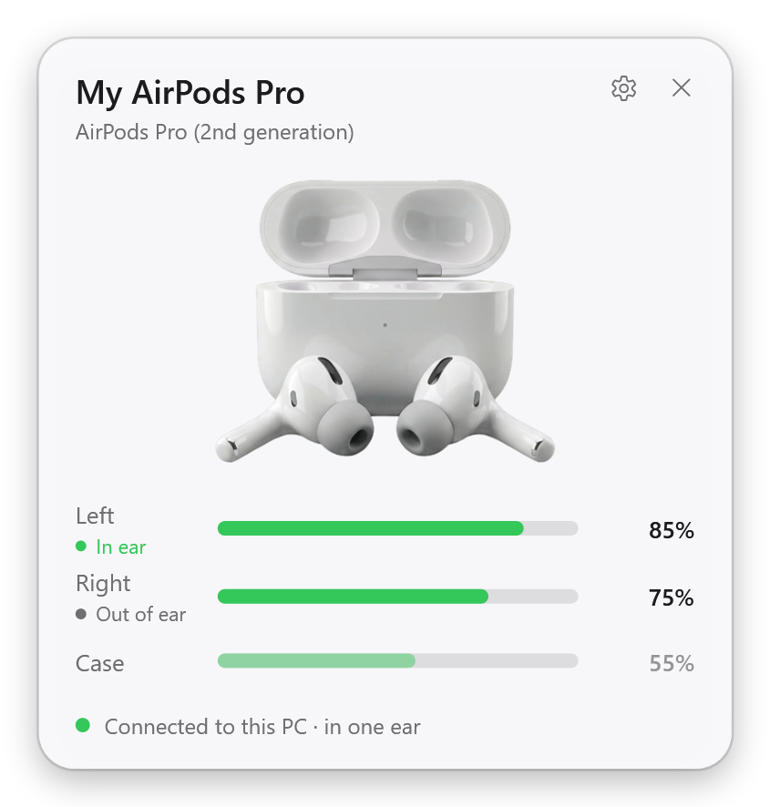
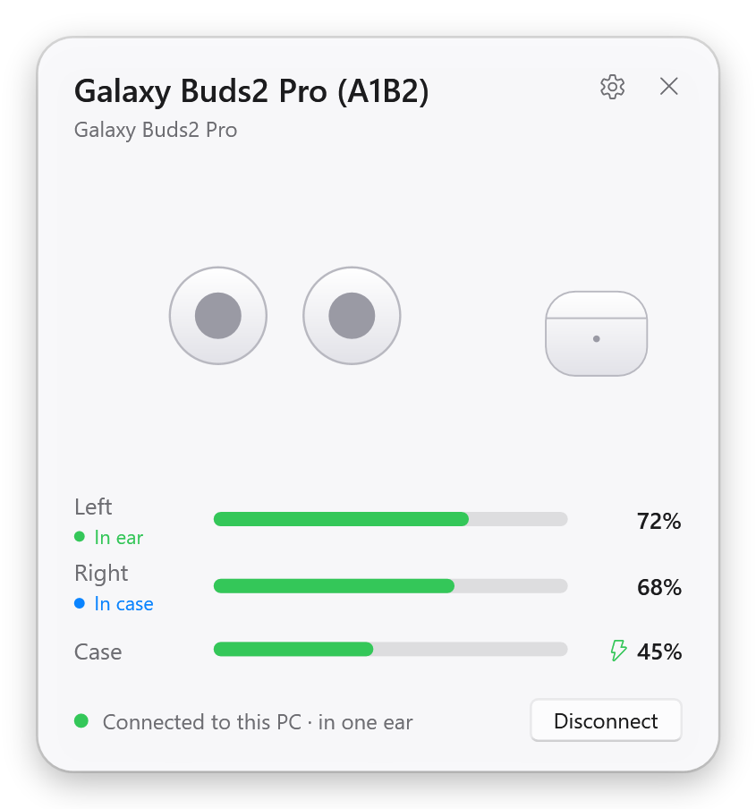
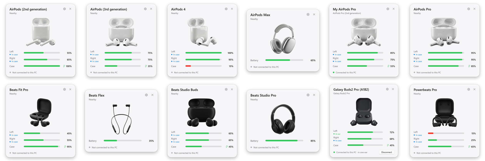

Everything your iPhone shows, now on your PC
Battery popup
Open the case near your PC and see the left earbud, the right earbud and the case, with charging state.
Battery in the tray
Live battery levels of your AirPods and headphones next to the clock, with low battery warnings.
Automatic ear detection
Take an earbud out and Spotify, YouTube or Netflix pauses. Put it back in and it plays on.
One-click connect
Connect or disconnect from the popup, or let the earbuds switch to your PC when you put them in.
"Connected" notice
A small card in the top-right corner when your earbuds connect, with their battery levels.
Noise control
Off, Noise Cancellation, Transparency and Adaptive, with the experimental driver in the GitHub version.
Fix the muffled sound of AirPods on Windows
Do your AirPods sound muffled, flat or mono on Windows as soon as you open Teams, Discord or Zoom? When an app opens the earbuds' microphone, Windows switches them from stereo music to the Hands-Free profile, which sounds like a phone call. Earlo turns that off with one switch, so your earbuds always play in stereo. Calls then use your PC's microphone, and you can switch it back at any time.
Works with AirPods, Beats and Galaxy Buds

AirPods
- AirPods 1st, 2nd and 3rd generation
- AirPods 4 and AirPods 4 (ANC)
- AirPods Pro, AirPods Pro 2 (Lightning and USB-C), AirPods Pro 3
- AirPods Max (Lightning and USB-C)
Beats
- Powerbeats Pro, Powerbeats Pro 2, Powerbeats, Powerbeats3
- Beats Fit Pro, Studio Buds, Studio Buds +, Solo Buds
- Beats Flex, BeatsX
- Beats Solo3, Solo Pro, Solo 4, Studio3, Studio Pro
Samsung Galaxy Buds
- Galaxy Buds, Buds+, Buds Live, Buds Pro
- Galaxy Buds2, Buds2 Pro, Buds FE, Buds Core
- Galaxy Buds3, Buds3 Pro, Buds3 FE
Questions
How do I see my AirPods battery level on Windows?
Start Earlo and open the AirPods case near your PC. A popup shows the left and right earbud and the case, like on an iPhone, and the tray icon shows the levels at any time.
Why do my AirPods sound bad on Windows?
As soon as an app opens the earbuds' microphone (Teams, Discord, Zoom, a browser), Windows switches them from stereo to the Hands-Free profile, which is mono and muffled like a phone call. In Earlo, turn on Settings > Sound quality > "Turn off the earbuds' microphone for the best sound". They then always play in stereo; calls use your PC's microphone instead.
Does AirPods ear detection work on Windows?
Yes. Take an earbud out and Earlo pauses Spotify, YouTube, Netflix or any other app in the Windows media controls; put it back in and it plays on.
Does Earlo work with Beats and Galaxy Buds?
Yes. Beats earbuds and headphones work like AirPods. Samsung Galaxy Buds, from the 2019 Galaxy Buds to the Buds3 Pro and Buds Core, show exact battery levels once they are connected to your PC.
Is Earlo free?
Yes, Earlo is free and open source on GitHub. A Microsoft Store version with automatic updates supports its development.